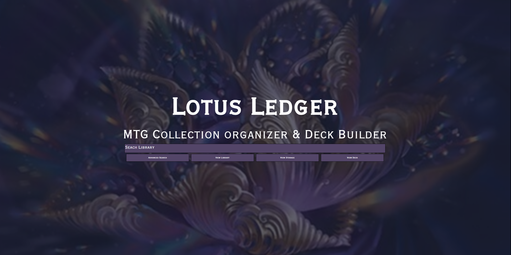
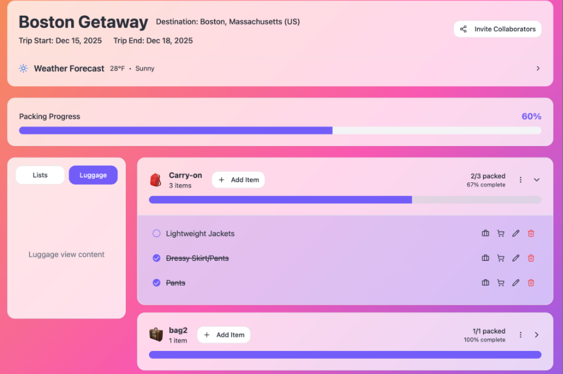
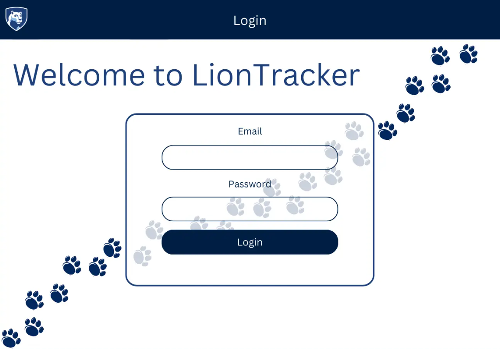
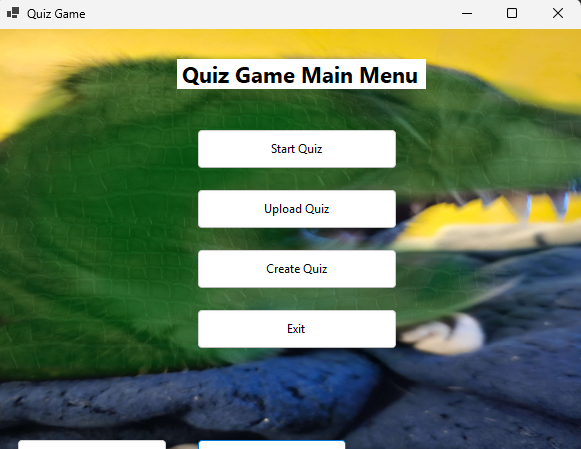
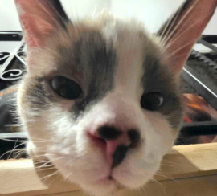

My Work
This gallery highlights some of my technical projects, application interfaces, and personal photography. My work includes web development, data modeling, and full-stack applications built with modern tools such as React, Node.js, MongoDB, SQL, and Snowflake.
Web & Software Projects




Random Images

